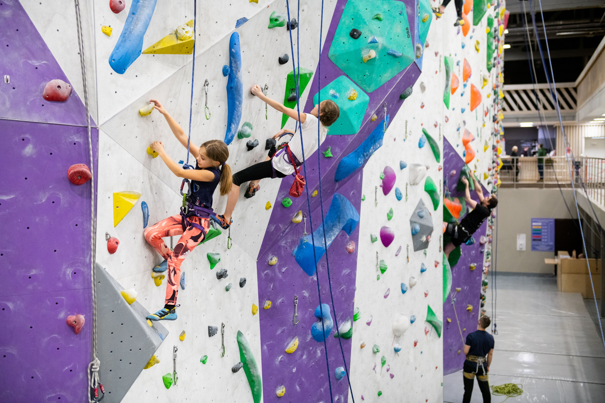

Блоки нужны чтоб лазить

Скалолазание развивает ловкость и силу рук, а еще оно очень увлекательное и, хоть так и называется, доступно не только на скалах.
Даже если у вас в городе нет гор, вероятно, найдутся холмы со скальными участками неподалеку или маленький скалодром.
Что надеть, как выбрать обувь и как подготовить тело — собрали все, что поможет вам легче забраться на высоту.
Скалолазание — это, по сути, лазание на высоту, будь то по естественному или искусственному рельефу. Звучит похоже на альпинизм? Скалолазание и правда вышло из альпинизма, но сейчас это разные виды активного отдыха. Разницу проще всего объяснить наглядно. Представьте себе две картинки На одной суровый человек в пуховике с ледорубом поднимается по снегу вверх, шаг за шагом, тяжело дышит. Его задача — дойти до вершины — например, Эльбруса. Это альпинист. На второй — девушка в летний день в шортах и майке лезет по скале у моря в страховочной системе. Тут мы видим скалолазание.


| Категория | Примеры |
| Обувь | Скальные туфли (боулдеринговые или для сложности) |
| Магнезия | Карбонат магния в порошке (жидкий/рассыпчатый) для сухости рук |
